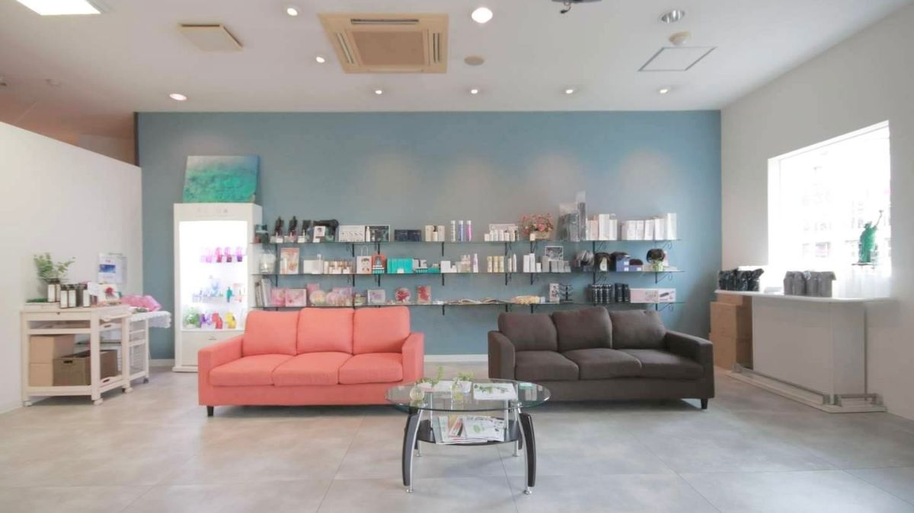
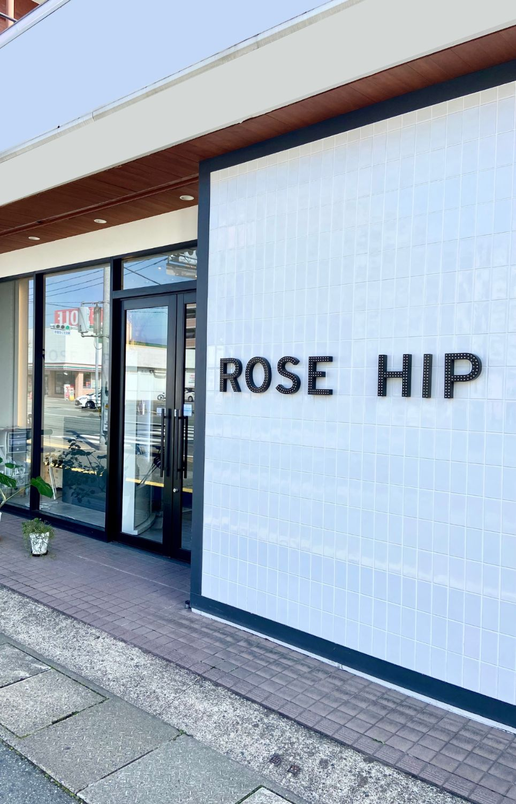
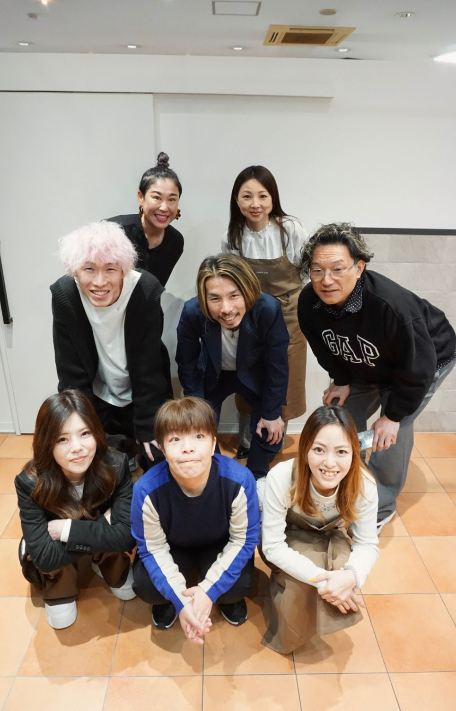
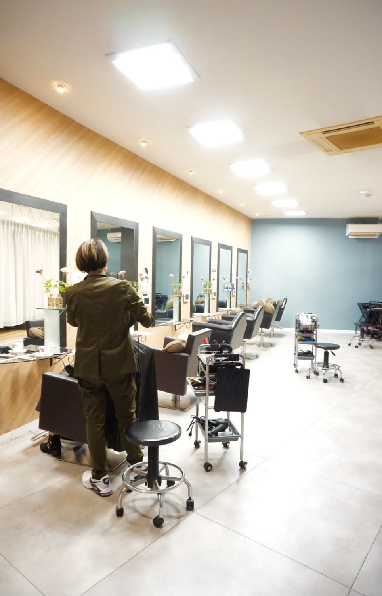
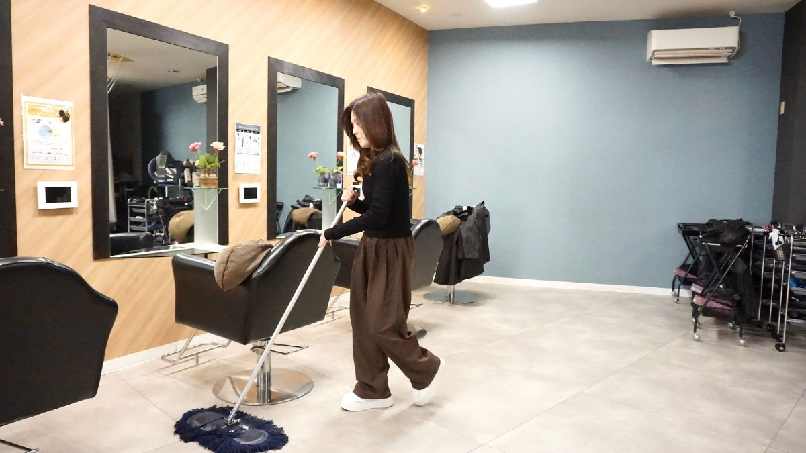
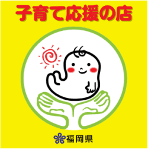
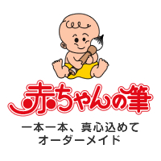
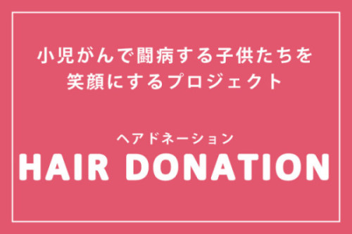

01 / SALON
A place
for everyday
beauty.
美容を、
もっと身近に。
02 / OUR SALON
美容を楽しむ時間を、
心地よく過ごせる
場所へ。
ROSE HIPは、HAIR・NAIL・EYEを通して、 日常の中で美容を楽しめる時間を大切にしています。





03 / SHOP CONCEPT
店舗コンセプト一人ひとりの日常に、
心地よい美容を。
ROSE HIPは、お客様一人ひとりのライフスタイルに寄り添い、毎日が少し前向きになるような美容を大切にしています。
技術はもちろん、サロンで過ごす空間や会話、安心できる時間も大切に。
心からリラックスしながら、自分らしい美容を楽しんでいただけるサロンを目指しています。
03 / INFORMATION
ADDRESS
〒819-0022
福岡県福岡市西区福重5丁目4-10
TEL
OPEN
TUE — SAT10:00 — 19:00
SUN / HOLIDAY10:00 — 18:00
CLOSED
MONDAY / 3RD SUNDAY
04 / ACCESS
ROSE HIPへ、
お越しいただく
ために。
〒819-0022
福岡県福岡市西区福重5丁目4-10
05 / FIRST VISIT
はじめての方にも、
安心して美容を
楽しんでいただける
ように。
06 / RESERVATION
美容を楽しむ時間を、
ROSE HIPで。
ご予約はこちら。
05 / SOCIAL ACTIVITIES
地域・社会への取り組み美容を通じて、
地域や社会とつながる。
ROSE HIPでは、地域の皆さまとのつながりを大切にしながら、美容を通じてできる取り組みを続けています。

子育て応援の店
子育て中の方にも安心してご利用いただけるよう、一人ひとりの状況に寄り添った柔軟な対応と、過ごしやすい環境づくりを大切にしています。

赤ちゃんの筆
赤ちゃんの初めての髪を、大切な思い出として形に残す「赤ちゃんの筆」。ご家族の記念に残る筆づくりをお手伝いしています。

ヘアドネーション
髪を通じて、誰かの力になれるように。ROSE HIPでは、ヘアドネーションの取り組みを応援しています。